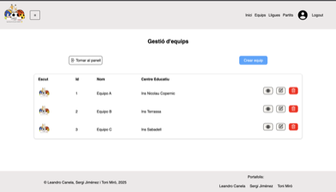

2025
Landing page estática de noticias
Una página centrada en maquetación y composición visual con HTML y CSS. La captura del repo muestra una versión con estética oscura y tarjetas de contenido.
Desarrollo web sencillo, claro y funcional.
Soy estudiante de desarrollo web y me interesa construir productos limpios, fáciles de usar y bien resueltos. Trabajo sobre todo con HTML, CSS, JavaScript, PHP y Laravel.
Actualmente sigo aprendiendo a través de proyectos personales y académicos. Me atrae especialmente la parte visual del frontend, pero también disfruto construyendo lógica de negocio y paneles de gestión en backend.
Este portfolio está hecho en HTML, CSS y JavaScript puro, con una estética muy contenida para que el contenido tenga todo el peso.
Una página centrada en maquetación y composición visual con HTML y CSS. La captura del repo muestra una versión con estética oscura y tarjetas de contenido.

Aplicación para gestionar equipos, ligas y partidos en un entorno escolar. La miniatura muestra el panel de gestión de equipos con acciones de edición y consulta.
Proyecto privado o no publicado actualmente.
Plataforma multi-tenant hecha con Laravel para la gestión de restaurantes. La imagen corresponde a la pantalla de acceso del producto.
HTML, CSS, JavaScript, PHP, Laravel, MySQL, Vue y Astro.
Puedes escribirme a leandrocanela279@gmail.com